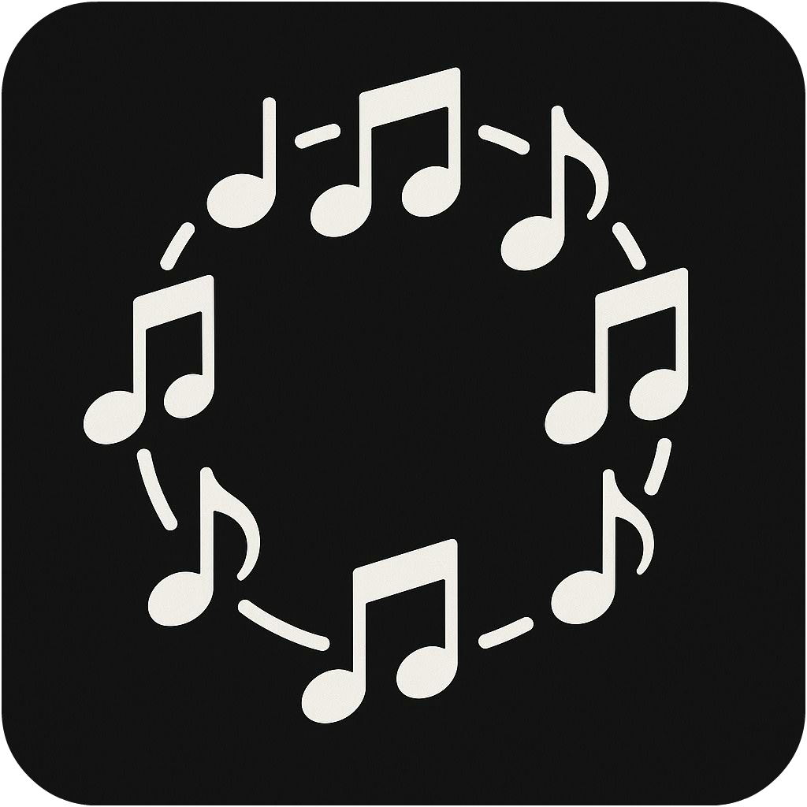
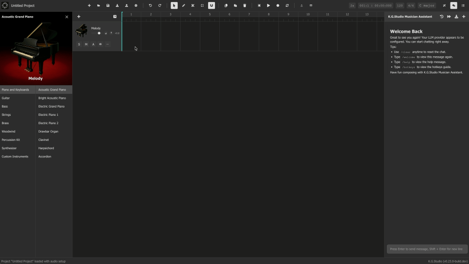
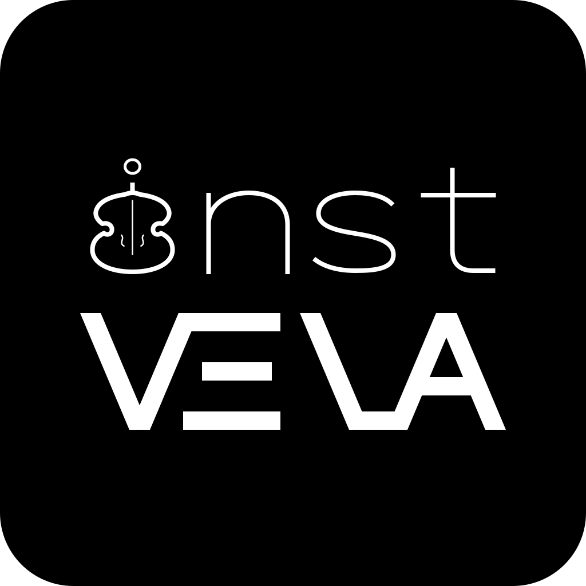

Independent audio software & research
Ideas into music.
Make it yours.
A studio powered by AI agents. Expressive AI instruments.
Compose, arrange, and bring your ideas to life — right in your browser.

01 / The studio
K.G.Studio
Your ideas deserve a place to play.
A music studio that lives in your browser. Compose in the piano roll, arrange your tracks, and shape your sound — with an AI music assistant to help you find the next note.


02 / The instrument
InstVELA
M01PreviewWrite the notes. Hear a performance.
Turn MIDI into expressive string audio, with natural pitch movement and evolving dynamics. Discover violin, viola, cello, and double bass — rendered on your own device.
A little room to experiment
Give the melody your own touch.
Drag a note up or down. Render the phrase.
Hear what a small change can do.
With the piano roll focused, use Left and Right to select a note, and Up and Down to change its pitch.
Loading the violin phrase…
Bring your own MIDI to the full demo.
Explore the full demoA note from the lab
Driven by curiosity.
Grounded in music.
KGAudioLab is an independent audio development lab exploring the meeting point of music, software, and machine learning.
Music-making should be open to everyone: easy to begin, quick to explore, and rich in possibilities. We’re building a place to sketch, compose, arrange, and refine ideas directly in the browser, with minimal setup. AI agents support the creative process, while AI instruments bring static MIDI to life as vivid, expressive performances with a human touch.
Our vision is local by default and open by design: your creative work stays on your device, with tools and models anyone can understand, adapt, and build on.